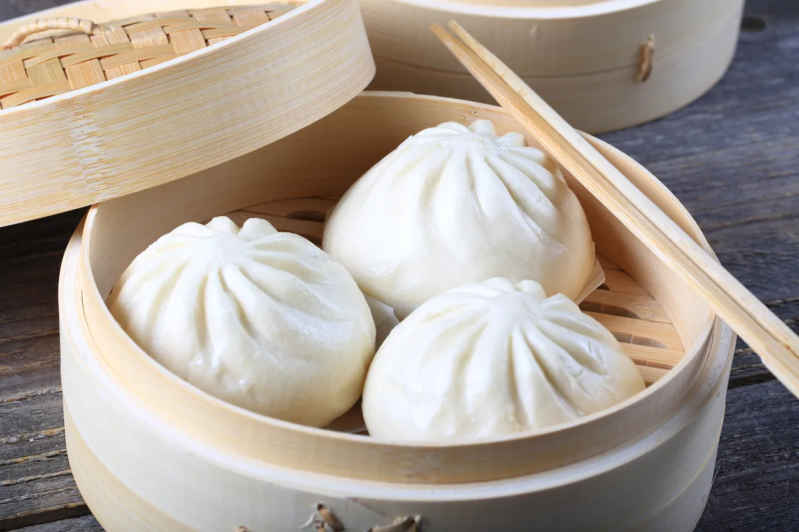

Baozi

Description:
A bunch of Baozis, cooked by our chef
Ingredients:
- Pork
- Soy Sauce
- Sesame Oil
- Black Pepper
- Fresh Onion
Steps:
- Mix together the flour, caster sugar and ½ tsp salt in a large bowl (see tip). Dissolve the yeast and a
pinch of sugar in 1 tbsp warm water, then add it to the flour with the milk, sunflower oil, rice vinegar and
200ml water. Mix into a dough, adding a little extra water if needed.
- Tip the dough onto a lightly floured work surface and knead for 10-15 mins, or until smooth. Put in a
lightly oiled bowl, cover with a damp cloth and leave to rise for 2 hrs, or until doubled in size.
- Tip the dough out onto a clean work surface and punch it down. Flatten the dough with your hands, then
sprinkle over the baking powder and knead for 5 mins.
- Roll out the dough into a long sausage shape, about 3cm thick, then cut into pieces that are about 3cm wide,
you should have 18. In the palm of your hand, roll each piece of dough into a ball and leave to rest for
2-3 mins.
- Use a rolling pin to roll out each ball, one by one, into an oval shape about 3-4mm thick. Rub the surface
of the dough ovals with oil and brush a little oil over a chopstick. Place the oiled chopstick in the centre
of each oval. Fold the dough over the chopstick, then slowly pull out the chopstick.
- Cut 18 squares of baking parchment and put a bun on each. Transfer to a baking tray, cover with a clean tea
towel and leave to prove in a warm place for 1 hr 30 mins, or until doubled in size.
- Heat a large steamer over a medium-high heat. Steam the buns for 8 mins until puffed up (you’ll need to do
this in batches). Prise open each bun and fill with our barbecue pork and pickled carrot & mooli. Eat while
they’re still warm.